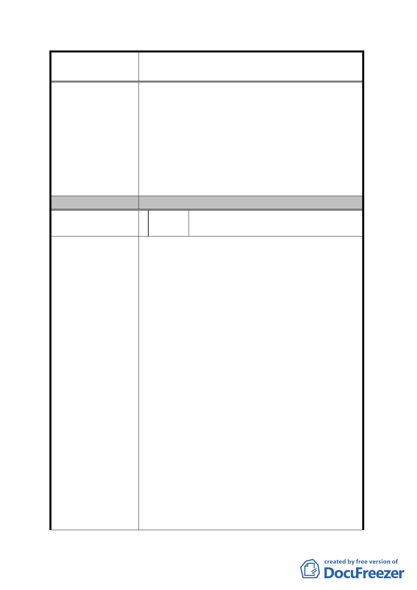

案名
變更臺北市內湖區蘆洲里附近部分工業區為
保護區、住宅區及道路用地主要計畫案
生之龐大交通需求。
二、 考量鄰近之「內湖科技園區」近年來發展快
速，已成為本市科技產業中心，而該園區之
土地開發已趨飽和，為將其發展動能延伸並
擴大至周邊傳統工業區，增加發展腹地，同
時解決傳統工業區使用及開發等課題，本計
畫參照「內湖區科技園區」發展模式，建立
委員會決議
彈性的土地使用管制機制，以因應產業快速
變化且多樣化發展需求。
採納發展局意見。
編
號 9 陳情人
湖園實業股份有限公司、方保泰、方謝
月娥、方建富
1. 此區塊當年政府為了內湖垃圾山及內湖焚化爐
能順利運作，以解決臺北市垃圾問題，市政府積
極地動用公權力辦理徵收，開闢計畫道路。本人
已配合徵收辦過一次如今因為重劃又得再被迫
付出 45%的土地，如同是一頭牛被剝兩次皮。
2. 今貴局「變更臺北市內湖區蘆洲里附近部分工業
區為保護區、住宅區及道路用地主要計畫案」，
欲將此區重劃為特工 A 區，若本人配合重劃勢必
為得將大樓拆除且須重建，且因重劃後土地減少
45%，故重建得為 12 樓以上之高樓方敷使用，重
建成本試算如下：
陳 情 理 由 9874 坪(大樓總坪數)×12 萬(每坪重建成本)＝
11.8488 億(大樓重建成本)而市府僅補貼 5.8652
億(拆遷補償費)，損失高達 5.8652 億。(重建期
間廠房無法使用之損失尚且未計)
3. 查湖園實業股份有限公司(彩虹大樓)領有本市
86.3.24 使字第 113 號使用執照，現大樓現況良
好，屬於 R.C 構造之永久性建築並備有電梯 5
部，除了已配合市府辦過一次重劃外，方於民國
86 年才發照完竣，然於短期內政策一再改變，對
本人私有財產及權益影響甚鉅，本人強烈主張不
必拆除本大樓，如都市計畫變更使用強度及組
別，則本人甚於地方發展及地方公益願意配合以
- 19 -